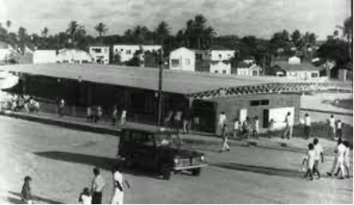
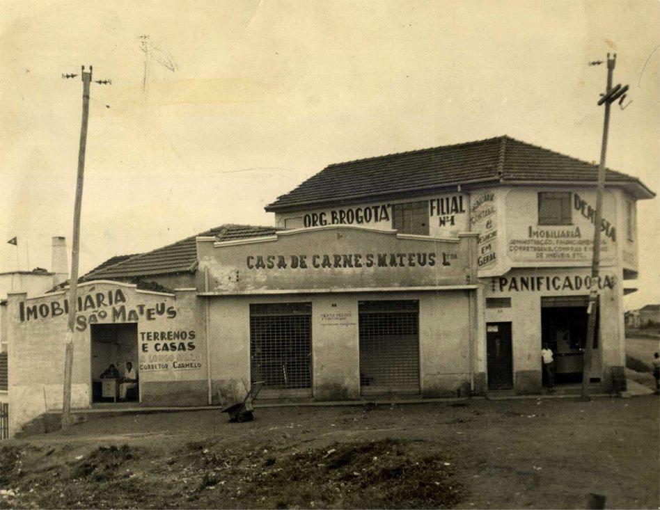
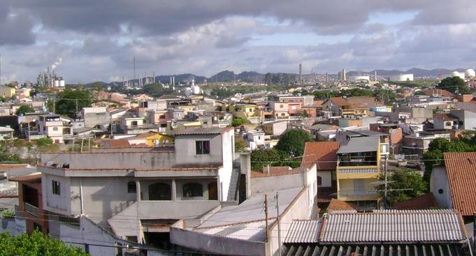
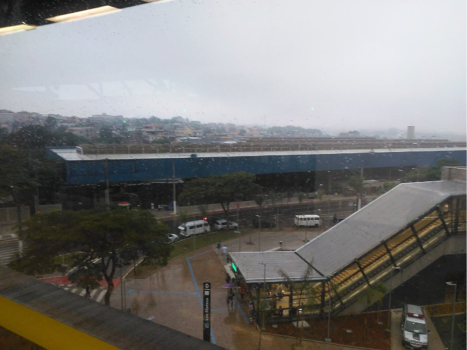
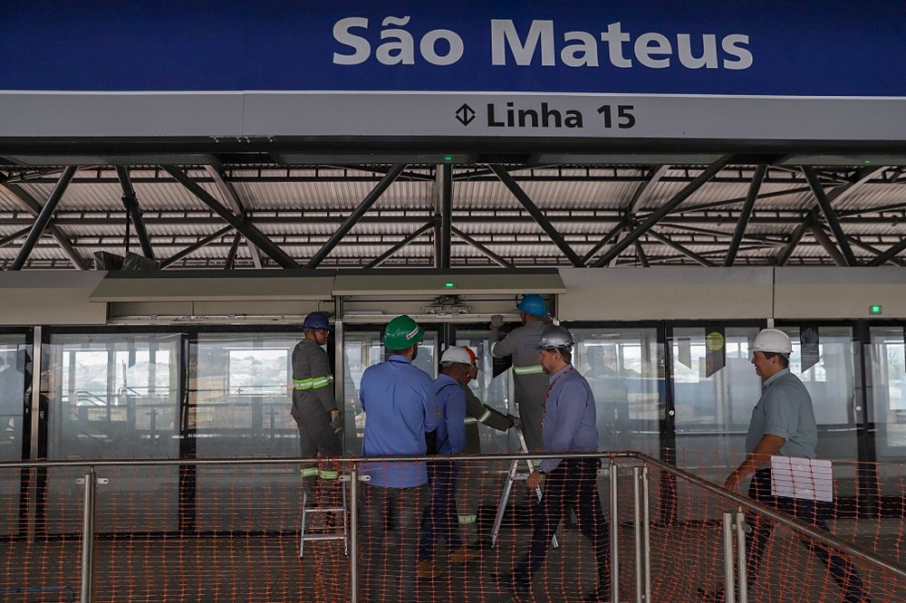
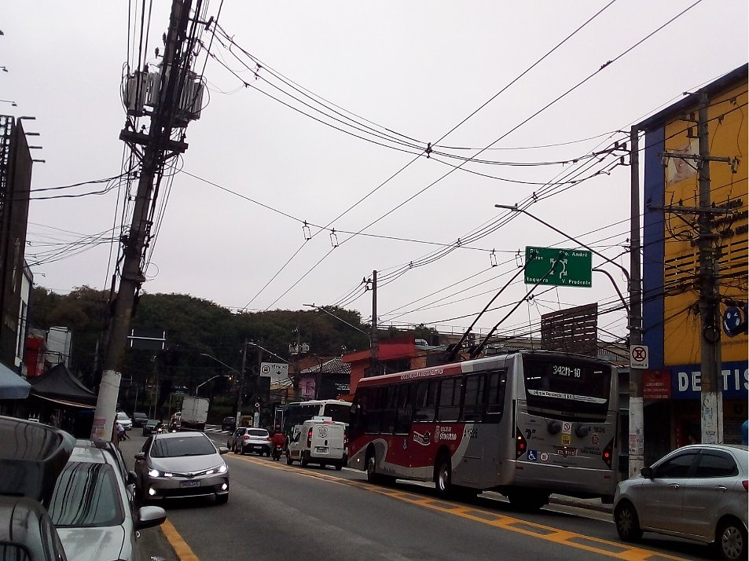

História do Bairro
De fazenda a polo da Zona Leste: São Mateus foi construído pelos próprios moradores.
Um bairro feito em mutirão
São Mateus nasceu do loteamento de uma antiga fazenda, em 1948. As ruas foram abertas com burros, as casas subiram em mutirão e, década após década, moradores vindos de várias partes do Brasil se organizaram por escola, transporte, moradia e saúde.
Essa história de organização comunitária continua hoje nas iniciativas sociais do bairro.
- Nordeste
- Minas Gerais
- Paraná
- Interior de São Paulo
RAÍZES DO BAIRRO
Linha do tempo
Os principais marcos de São Mateus, de 1946 até hoje.
- Fazenda São Mateus1946
A compra das terras
A família Bei (Mateo e Salvador) compra uma gleba de 50 alqueires da antiga Fazenda Rio das Pedras. Nildo Gregório da Silva começa a abrir as primeiras ruas com a ajuda de burros, a partir da atual Avenida Mateo Bei.

Registro antigo do bairro. Acervo do projeto Voluntee. - Cidade São Mateus1948
Os primeiros lotes
Mateo Bei loteia a área e vende os primeiros terrenos. As casas são erguidas em mutirão pelos próprios moradores. Salvador Bei batiza o lugar de "Cidade São Mateus" em homenagem ao pai. Em 8 de dezembro, uma missa marca o início do núcleo urbano.

Imobiliária São Mateus anunciando terrenos e casas. Acervo do projeto Voluntee. - A Voz da Colina1952 a 1958
Organização dos moradores
Os moradores se organizam por escola, luz, água, transporte e asfalto. Nildo Gregório funda a associação "A Voz da Colina" para levar as reivindicações do bairro. Chega a primeira linha de ônibus (1952), a primeira escola abre num galpão de madeira (1955) e é fundada a primeira igreja católica (1958).

Casas de São Mateus vistas do alto. Acervo do projeto Voluntee. - Feito em mutirão1960 a 1990
Gente de todo o Brasil
Migrantes do Nordeste, de Minas Gerais e do Paraná chegam ao bairro, que cresce rápido. Moradia, escolas e postos de saúde vêm de mutirões e de mobilizações populares. Em 1986 é criada a Administração Regional de São Mateus e, em 1988, inaugurado o Terminal Metropolitano de Ônibus.

Terminal São Mateus. Foto: Sorocabano 32, Wikimedia Commons, CC BY-SA 4.0. - Linha 15 · Prata2002 a 2021
Subprefeitura e monotrilho
Em 2002 a Administração Regional vira Subprefeitura de São Mateus. Em 16 de dezembro de 2019, o monotrilho da Linha 15-Prata chega à estação São Mateus, e em 2021 é inaugurada a estação Jardim Colonial.

Estação São Mateus em obras, 2019. Foto: Governo do Estado de São Paulo, Wikimedia Commons, CC BY 2.0. - Av. Mateo BeiHoje
Polo da Zona Leste
A cerca de 22 km da Praça da Sé, São Mateus é um polo de comércio e serviços da Zona Leste. A Avenida Mateo Bei, que leva o nome do fundador, é o principal eixo do bairro. O aniversário é celebrado em 21 de setembro, dia do padroeiro São Mateus.

Avenida Mateo Bei, 2025. Foto: LuanCampSouza93, Wikimedia Commons, CC0.
O BAIRRO HOJE
São Mateus em números
Fontes: Subprefeitura São Mateus, Histórico do bairro (prefeitura.sp.gov.br); Câmara Municipal de São Paulo.